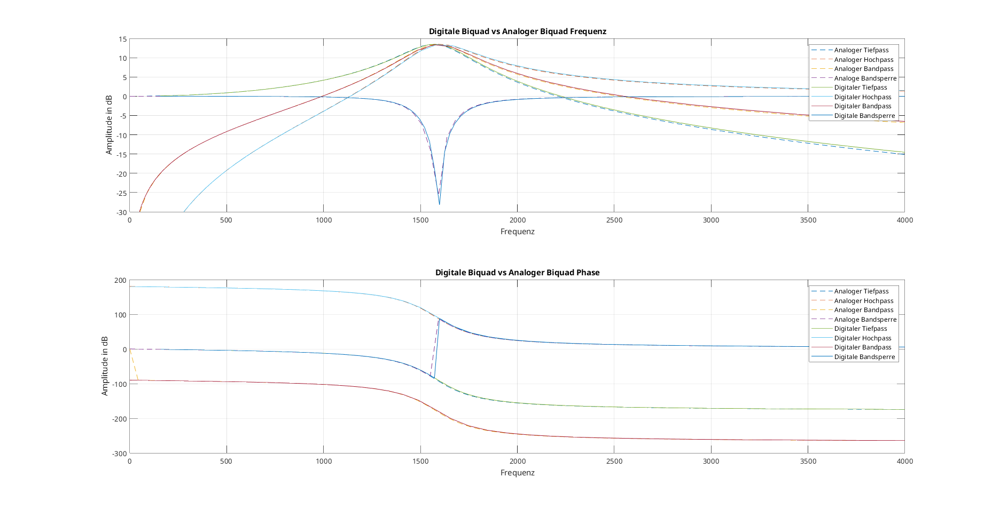
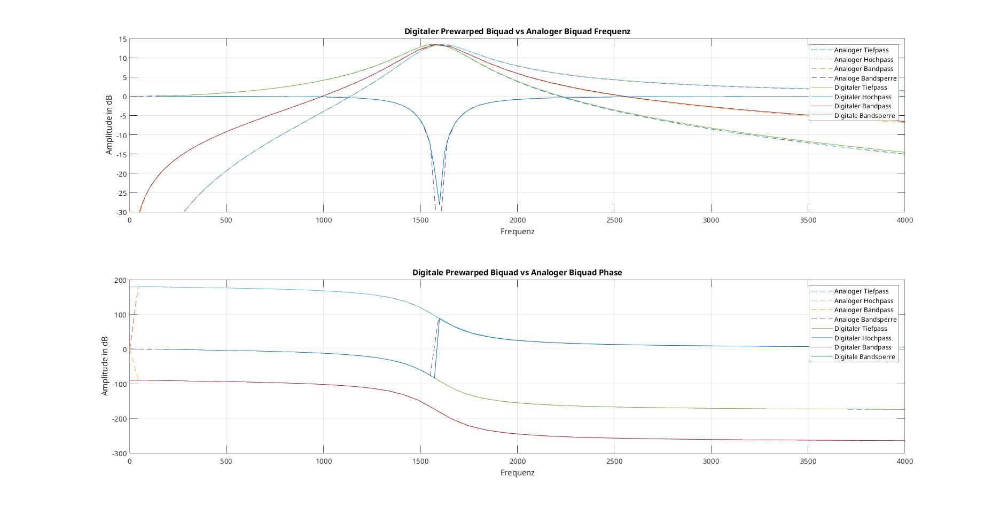

3 Biquads: Digitale Filter auf dem Pynq-Z2 als Lehrdemonstration
4 Einführung
Diese Bachlorthesis dient als eine Lerndemonstration zur Implentierung von digitalen biquadratischen-Filtern auf Mikrocontrollern sowie FPGAs. Im Umfang dieser Lerndemonstration werden digitale Biquad-Filter mithilfe von Matlab- und Pythontools entworfen und im Anschluss auf Hard und Software umgesetzt. Der Prozess der Umsetzung wird zum Verständis dokumentiert sowie genau erklärt, damit Leser dieser Lerndemonstration mithilfe ihrer Hardware für sich den Prozess reproduzieren können.
5 Theoretische Grundlagen
5.1 Infinite Impulse Response (IIR-Filter)
Infinite Impulse Response (IIR) Filter gehören in der Signalverarbeitung zu den grundlegenden Typen der digitalen Filter. IIR-Filter zeichnen sich fundamental durch ihre characteristik aus, bei der Berechnung des aktuellen Ausgangswertes durch die Verwendung des gegenwärtigen und vergangenen Eingabewertes als auch des vorherigen Ausgabewertes. Aufgrund dieser Rückkopplung kann es dazu führen, dass die Impulsantwort von IIR-Filtern theoretisch unendlich lang andauern kann, was sie grundsätzlich von Finite Impulse Response (FIR) Filtern unterscheidet.
Die theoretischen Grundlagen von IIR-Filtern basieren auf der Tatsache, dass die Filter sowohl Nullstellen als auch Polstellen besitzen. Während FIR-Filter ausschließlich Nullstellen aufweisen, ermöglichen die Polstellen von IIR-Filtern eine effizientere Umsetzung bestimmter Filtereigenschaften. Dies führt zu dem Hauptvorteil von IIR-Filter für die Möglichkeit scharfe Übergänge im Frequenzgang mit relativ wenigen Koeffizienten zu erreichen.
Ein immenser Vorteil von IIR-Filtern liegt in der hohen Effizienz bei der Realisierung scharfter Frequenzgänge mit relativ wenigen Koeffizienten, während FIR-Filter für vergleichbare Filtereigenschaften oft hunderte von Koeffizienten benötigen, können IIR-Filter ähnliche Ergebnisse mit deutlich geringerem Rechenaufwand erreichen. Aufgrund dieser Eigenschaft eignen sich IIR-Filter besonders gut im Einsatz von Systemen mit beschränkten Ressourcen oder in Echtzeitverarbeitung.
Biquadratische Filter, kurz als “Biquad” bezeichnet, sind eine spezielle Unterklasse von IIR-Filtern zweiter Ordnung. Durch das Kaskadieren solcher Biquad-Sektionen besteht die möglichkeit komplexe IIR-Filter höhrer Ordnung auf einfache Weise zu realsieren. Das Kaskadieren dieser Sektionen bringt Vorteile in Bezug auf numerische Stabilität, Flexibilät bei der Parameteranpassung und Modularität des Designs.
Die Verwendung von Biquad-Sektionen anstelle von Filtern höherer Ordnung in direkter Form bietet eine Vielzahl von Vorteilen. Die Anfälligkeit für Koeffizientenquentisierung wird enorm gemindert, da die Pole und Nullstellen weniger stark von kleinen Änderungen der Koeffizienten abhängen. Im weiteren ermöglicht die modulare Struktur eine unbahängige Optimierung jeder Sektion, wodurch der Entwurfsprozess vereinfacht wird.
5.2 Differenzengleichung eines IIR-Filters zweiter Ordnung
Digitale Filter können mit einer linearen Differenzengleichung beschrieben werden. Die biquadratischen Filter werden mit der Differenzengleichung eines IIR-Filters zweiter Ordnung beschrieben werden:
\[ y[n] = \frac{1}{a_0}(b_0 \cdot x[n] + b_1 \cdot x[n - 1] + b_2 \cdot x[n - 2] - a_1 \cdot y[n - 1] - a_2 \cdot y[n - 2]) \]
Der Wert \(y[n]\) bezeichnet den Ausgabewert zum Sample \(n\), während \(x[n]\) den Eingangswert darstellt. Der aktuelle Ausgabewert \(y[n]\) ergibt sich aus der gewichteten Summe der aktuellen und zwei vergangenen Eingabewerte, subtrahiert mit den zwei gewichteten vergangen Ausgabewerte.
Die Koeffizienten \(b_0\), \(b_1\) und \(b_2\) bestimmen den Einfluss des aktuellen und der vergangenen Eingabewerte (Feedforward), während \(a_1\) und \(a_2\) den Rückkopplungsanteil aus früheren Ausgabewerten (Feedback) modellieren. Im Allgemeinem wird der Koeffizient auf \(a_0\) auf 1 normiert, was zu der vereinfachten Form führt:
\[ y[n] = b_0 \cdot x[n] + b_1 \cdot x[n - 1] + b_2 \cdot x[n - 2] - a_1 \cdot y[n - 1] - a_2 \cdot y[n - 2] \]
Durch diese Normierung wird die praktische Implementierung vereinfacht, da ein Muliplikationsschritt entfällt.
5.3 Übertragungsfunktion eines IIR-Filters zweiter Ordnung
Zur Analyse des Frequenz- und Phasenverhaltens des Filters, wird die Differenzengleichung mittles der z-Transformation in den z-Bereich transformiert und daraus folgt die resultierende Übertragunsfunktion:
\[ H(z) = \frac{Y(z)}{X(z)} = \frac{b_0 + b_1 z^{-1} + b_2 z^{-2}}{1 + a_1 z^{-1} + a_2 z^{-2}} \]
Die rationale Funktion eines biquadratischen Filters beschreibt das Verhältnis zwischen dem Ausgang \(Y(z)\) zu dem Eingang \(X(z)\). Diese Gleichung stellt die normierte Form des Biquads dar, bei welcher der Nennerkoeffizient auf \(a_0 = 1\) normiert ist. Für den Fall, dass \(a_0 ≠ 1\) beträgt müssen die Koeffzienten durch \(a_0\) geteilt werden um die Normalform zu erreichen.
Anhand der Übetragungfunktion können die Pol- und Nullstellen des Filters analyziert werden, um die Stabilität des Biquad-Filters zu vergewissern. Dabei müssen alle Polstellen des Filters innerhalb des Einheitskreises der z-Ebene liegen, beziehungsweise der Betrag jedes Pols kleiner als 1 sein muss.
Befinden sich Pole außerhalb oder direkt auf dem Einheitskreis, kann es dazu kommen dass das Ausgangssignal unkontrolliert schwingt und das System damit instabil wird. Nullstellen haben hingegen lediglichen Einfluss auf die Frequenzcharakteristik und nicht direkt auf die Stabilität.
5.4 Stabilität und Pol-Nullstellen-Verteilung
Die Stabilität eines IIR-Filters ist ein kritischer Faktor, wechler für die Implementierung des Filters gegeben sein muss. Ein kausaler IIR-Filter ist genau dann stabil, wenn alle Polstellen seiner Übertragungsfunktion innerhalb des Einheitskreises der komplexen z-Ebene liegen. Mathematisch ausgedrückt muss für alle Polstellen \(|p_i| < 1\).
Die Lage der Pole bestimmt nicht nur die Stäbilität, sondern auch das dynamische Verhalten des Filters. Pole die näher am Rand des Einheitskreises liegen führen zu einem resonanten Verhalten mit langen ausschwingendem Verhalten, während Pole näher zum Ursprung hin, ein gedämpfteres Verhalten bewirken. Die Nullstellen hingegen beeinflussen primär dern Verlauf des Frequenzgangs.
Für die praktische Implementierung ist es wichtig zu beachten, dass Quantisierungseffekte sich auf die Lage der Pole auswirken können. Das kann im schlimmsten Fall dazu führen, sodass die Stabilität des Filters beeinträchtigt und der Filter instabil wird. Aus diesem Grund ist bei der Koeffizientenquantisierung besondere Vorsicht geboten, bei Filtern mit Polen nah oder auf dem Rand des Einheitskreises.
5.5 Frequenzgang und Phasenverhalten
Die Frequenzgang einew IIR-Filters wird durch die Auswertung der Übertragungsfunktion innerhalb des Einheitskreises erhalten, dafür wird die Substitution \(z = e^{j\omega}\) druchgeführt:
\[ H(e^{j\omega}) = \frac{b_0 + b_1 e^{-j\omega} + b_2 e^{-2j\omega}}{1 + a_1 e^{-j\omega} + a_2 e^{-j2\omega}} \]
Der Betrag \(|H(e^{j\omega})|\) beschreibt die Amplitudencharakteristik, während die Phase \(\arg(H(e^{j\omega}))\) das Phasenverhalten wiedergibt. Bei IIR-Filtern ist das Phasenverhlten im Allgemeinen nicht linear, was in manchen Anwendugen als unererwünscht erweist.
6 Implementierungsstrukturen biquadratischer Filter
Die praktische Implementierung von biquaratischen Filtern erfolgt durch die direkte Umsetzung der Differezengleichungen in Software oder Hardware.
Dafür werden die verzögerten Eingangswerte \(x[n-1]\) und \(x[n-2]\), sowie die Ausgangswerte \(y[n-1]\) und \(y[n-2]\) in Speicherelementen, sogenannten Verzögerungsgliedern, gespeichert. Der aktuelle Ausgangswert \(y[n]\) wird mittels der gewichteten Summation aller Terme gemäß der jeweiligen Differenzengleichung berechnet.
Bei der numerischen Implementierung sind verschiedene Aspekte zu berücksichtigen, insbesondere die Wortbreite und des Zahlenformats (Festkomma oder Gleitkomma).
Weitere Einflüsse wie Rundungsfehler oder Quantisierungsrauschen können die Filtercharakteristik beeinflussen und im Extremfall die Stabilität des Filters gefährden.
Diese Implementierungsstrukturen bieten die Möglichkeit mehrere Filter-Sektionen aneinander zu Verbinden. Diese Modularität biquadratischer Filter ermöglicht, komplexere Filtersysteme höherer Ordnung, durch die Kaskadierung mehrerer Biquad-Sektionen zu realisieren.
Dadurch können Vorteile im Bezug auf numerische Stabilität, Designflexibiltät und Implementierungseffizienz geschaffen werden, weil jede Sektion unabhängig entworfen und optimiert werden kann.
6.1 Direktform 1
Die Direktform 1 stellt die direkteste Umsetzung der biquadratischen Differenzengleichung in einer Signalflussstruktur dar.
Diese Implementierung folgt direkt der mathematischen Beschreibung unter der Verwendung separater Verzögerungsketten für die Eingangs- als auch die Ausgangswerte.
Diese Struktur kann als eine Parallelschaltung eines rein rekusiven Teils (nur Pole) und eines nicht rekursiven Teils (nur Nullstellen) aufgefasst werden.
\[ y[n] = b_0 \cdot x[n] + b_1 \cdot x[n - 1] + b_2 \cdot x[n - 2] - a_1 \cdot y[n - 1] - a_2 \cdot y[n - 2] \]
Für die Direktform 1 Implementierung werden zunächst alle gewichteten Eingangswerte und deren Verzögerungen zusammengefasst und berechnet:
\[ w[n] = b_0 \cdot x[n] + b_1 \cdot x[n - 1] + b_2 \cdot x[n - 2] \]
Anschließend wird die Rückkoppling der verzögerten Ausgangswerte realisiert: \[ y[n] = w[n] - a_1 \cdot y[n-1] - a_2 \cdot y[n-2] \]

In dieser Struktur werden vier Verzögerungselemente verwendet: zwei für die Eingangsverzögerung, \(x[n-1]\) und \(x[n-2]\), sowie zwei für die Ausgangsverzögerung, \(y[n-1]\) und \(y[n-2]\). Die Multiplikationen zwischen den Verzögerungselementen und den Koeffizienten erfolgen parallel, wodurch sich eine hohe Verarbeitungsgeschwindigkeit erzielen lässt.
Ein wesentlicher Vorteil der Direktform 1 liegt in ihrer Robustheit gegenüber Koeffizientenquantisierung. Da die Feedforward- und Feedback-Pfade getrennt sind, beeinflussen Quantisierungsfehler in einem Pfad nicht direkt den anderen. Dies führt zu einer besseren numerenrischen Stabilität, besonders bei der Verwendung von Festkomma-Arithmetik.
Die Direktform 1 zeichnet sich durch ihre konzeptionelle Einfachheit und die direkte Korrespondenz zur Differenzengleichung aus. Nachteilhaft bei dieser Struktur ist der erhöhte Speicherbedarf, aufgrund der redundanten Verzögerungselemente. Für Anwendungen mit strengen Speicherbeschränkungen kann dies eine limitierender Faktor sein.
6.2 Direktform 2 (Kanonische Form)
Die Direktform 2, oder auch als kanonische Form bekannt, ist eine optimierte Variante der Direktform 1, welche durch die Umordnung der Operationen die Anzahl der benötigten Verzögerungselemente minimiert.
Diese Struktur macht sich die Kommutativität (Vertauschbarkeit) linearer zeitinvarianter (LTI)-Systeme zunutze, indem sie die Reihenfolge von der Vorwärts- und Rückwärtsverarbeitung vertauscht.

Zunächst wird ein Zwischenwert \(w[n]\) durch die rekursive Beziehungen erzeugt:
\[ w[n] = x[n] - a_1 \cdot w[n-1] - a_2 \cdot w[n-2] \]
Der Zwischenwert \(w[n]\) dient als Substituion für die Verzögerungselemente der Ein- und Ausgangswerte.
\[ y[n] = b_0 \cdot w[n] + b_1 \cdot w[n-1] + b_2 \cdot w[n-2] \]
In dieser Struktur werden nur zwei Verzögerungselemente für w[n-1] und w[n-2] benötigt, da die rekursive als auch die nicht-rekursive Verarbeitung auf diesleben verzögerten Werte zugreifen. Die Bezeichnung “kanonisch” bezieht sich darauf, dass diese Implementierung die minimal mögliche Anzahl von Verzögerungselementen verwendet und dadurch die Speichereffizienz optimiert.
Die Direktform 2 eignet sich Ideal für Systeme mit begrenzten Speicherressourcen. Der reduzierte Speicherbedarf ist insbesondere bei der Implementierung auf Mikrocontrollern oder in FPGA-Anwendungen von hohem Vorteil, bei welchen Speicher eine limitierte und kostbare Ressource darstellt.
Jedoch weist diese Struktur eine erhöhte Anfälligkeit gegenüber Quantisierungseffekten auf, da die Zwischenwerte \(w[n]\) größere Dynamikbereiche aufweisen können als die ursprünglichen Ein- und Ausgangswerte. Dies kann zu einer Verschlechterung des Signal-Rausch-Verhältnisses führen, insbesondere bei der Verwendung von Festkomma-Arithmetik mit begrenzter Wortbreite.
6.3 Transponierte Direktform 2:
Die transponierte Direktform 2 kann gebildet werden durch die Anwendung des Transpositionstheorems auf die Direktform 2. Dieses Theorem besagt, dass die Umkehrung aller Signalflussrichtungen bei gleichzeitiger Vertauschung von Eingängen und Ausgängen eine äquivalente Übertragungsfunktion ergibt. Die resultierende Struktur weist oft günstigere numerische Eigenschaften auf, als die ursprüngliche Form.

Die transponierte Direktform 2 wird druch die folgende Differenzengleichungen beschrieben:
\[ s_2[n] = b_2 \cdot x[n] - a_2 \cdot y[n] \]
\[ s_1[n] = s_2[n] + b_1 \cdot x[n] - a_1 \cdot y[n] \]
\[ y[n] = s_1[n] + b_0 \cdot x[n] \]
Bei der transponierten Direktform 2 werden die Zwischenwerte \(s_1[n]\) und \(s_2[n]\) als Verzögerungselemente verwendet. Diese Struktur eignet sich besonders gut in der Implementierung von Echtzeitanwendung, aufgrund ihrer effizienten Berechnung und der guten Eignung für parallele oder pipelined Hardware-Architekturen.
Ein wesentlicher Vorteil der transponierten Direktfrom 2 liegt in ihrer reduzierten Anfälligkeit gegenüber Koeffizientenquantisierung. Die Rückkopplungsschleifen sind kürzer als in der Direktform 2, was zu einer verbesserten numerischen Stabilität führt. Darüber hinaus ist die Struktur besonders gut für die Implementierung in Hardware geeignet, da die Berechnungen eine natürliche Pipeline-Struktur ausweisen.
7 Numerische Aspekte und Quantisierungseffekte
Die praktische Implementierung digitaler Filter auf Systemen mit endlicher Wortlänge birngt verschiedene Herausforderungen mit sich. Diese Effekte können die Filterleistung erheblich beeinträchtigen und müssen bereits in beim Entwerfen berücksichtigt werden. Die wichtigsten numerischen Aspekte sind Koeffizientenquentisierung, Quantisierungsrauschen(Rundungsrauschen), Overflow-Probleme und nichtlineare Quantisierungseffekte.
7.1 Koeffizientenquantisierung
Die Koeffizientenquantisierung ist einer der kritischen Aspekte bei der Implementierung digitaler Filter auf Systemen mit begrenzter Wortlänge. Bei der Darstellung der Filterkoeffizienten mit einer endlichen Anzahl von Bits entstehen Quantisierungsfehler, die zu einer Verschiebung der Pole und Nulstellen des Filters führen kann.
Auswirkung der Koeffizientenquantisierung
Die Quantisierung der Koeffizienten führt zu verschiedenen unerwünschten Effekten:
Polverschiebung: Die quantisierten Koeffizienten verschieben die Pole des Filters, was zu einer Änderung der Filtercharakteristik führt. Im schlimmsten Fall können die Pole aus dem Einheitskreis herauswandern und zu einem instabilen Filter führen.
Frequenzgangverzerrung: Die Verschiebung der Pole und Nullstellen führt zur Abweichung im Frequenzgang. Besonders kritisch ist dies bei scharfen Filtern mit hoher Güte.
Stabilitätsverlust: Pole am oder auf dem Rand des Einheitskreises kann bereits durch kleine Quantisierung zur Instabilität zur Instabilität führen. Die Wahrscheinlichkeit der Instabilität steigt mit abnehmender Wortlänge.
8 Bilineartransformation
Die Bilineartransformation dient als ein Verfahren, welches die Überführung analoger kontinuerierlicher Filter in digitale Filterstrukturen ermöglicht. Bei diesem Verfahren wird das analoge Frequenzverhalten möglichst genau in den digitalen Frequenzbereich übertragen und bietet dabei die Erhaltung der Stabilität sowie eine bijektive, aliasfreie Abbildung der s-Parameter in den z-Bereich. Sei überführt die imaginäre Achse der s-Ebene (\(j\omega\)) exakt auf den Einheitskreis der z-Ebene und erhält dabei die Stabilitätsbedingungen.
8.1 Zentrale Substitions
Die mathematische Basis der Bilineartransformation beruht auf einer Substitution der s Parameter: \[ s = \frac{2}{T_d} \cdot \frac{1 - z^{-1}}{1 + z^{-1}} \]
Dabei ist \(T_d\) ein Entwurfsparameter mit Zeitcharakteristik, der in der Praxis überlicherweise mit der Abtastperiode \(T\) geleichgesetzt wird. Durch dieses nichtlineare Transformation werden rationale Funktionen im s-Bereich in rationale Funktionen im z-Bereich abgebildet, ohne dass die Orndung der Übertragungsfunktionen ansteigt.
8.2 Transformation der Übergangsfunktion
Zur Digitalisierung eines analogen Filters mit der Übertragungsfunktion \(H_c(s)\) wird die Subtitution in die analoge Übertragungsfunktion eingesetzt. Dieser Prozess führt zur digitalen Übertragungsfunktion:
\[ H(z) = H_c\left( \frac{2}{T_d} \cdot \frac{1 - z^{-1}}{1 + z^{-1}} \right) \]
Die resultierende Übertragungsfunktion \(H(z)\) repräsentiert die vollständige digitale Überführung des ursprünglichen analogen Filters, wobei alle wesentlichen Filtereigenschaften erhalten bleiben.
8.3 Transformation von Polen und Nullstellen
Die Pol- und Nullstellen des analogen Filters unterliegen während der Transformation spezifischen Abbildungsregeln. Für eine analoge Nullstelle \(\zeta_k\) und einen analogen Pol \(s_k\) ergeben sich die entsprechenden digitalen Werte:
\[ z_k = \frac{1 + \frac{T_d}{2} \cdot \zeta_k}{1 - \frac{T_d}{2} \cdot \zeta_k}, \quad p_k = \frac{1 + \frac{T_d}{2} \cdot s_k}{1 - \frac{T_d}{2} \cdot s_k} \]
Diese Transformationsregeln gewährleisten, dass die fundamentalen Eigenschaften des Filters während der Digitalierung erhalten bleiben. Insbesondere stellt die Transformation sicher, dass die linke s-Halbebene, welche alle stabilen Pole enthält, vollständig in das Innere des Einheitskreises der z-Ebene abgebildet werden kann.
8.4 Frequenzverzerrung - Frequency Warping:
Ein wesentlicher und unvermeidlciher Aspekt der Bilineartransformation ist die nichtlineare Abbildung der Frequenzachse, bekannt als Frequenzverzerrung oder Frequency Warping. Die mathematische Beschreibung der Frequenzformation lautet:
\[ \omega = 2 \cdot \tan^{-1} \left( \frac{\Omega T_d}{2} \right), \quad \Omega = \frac{2}{T_d} \cdot \tan\left( \frac{\omega}{2} \right) \]
Durch die Frequenzverzerrung kann das Verhalten digitaler Filter beeinflusst werden. Bei niedrigen Frequenzen, nahe \(\omega\) = 0 oder 0 Hz, ist die Verzerrung minimal und nahezu vernachlässigbar. In diesem Bereich verhalten sich digitale und analoge Filter nahezu identisch. Mit steigender Frequenz nimmt die Verzerrung progressiv zu und erreicht ihr Maximum bei Frequenzen nahe der Nyquist-Frequenz \(\omega = \pi\) oder der halben Abtastrate \(\frac{f_s}{2}\)
8.5 Prewarping
Um die Abweichungen die durch das Frequency Warping entstehen zu kompensieren, wird die Methode des Prewarpings genutzt. Dabei wird die analoge Designfrequenz \(\Omega_k\) so angepasst, dass sie nach der Bilineartransformation genau der genwünschten digitalen Frequenz \(\omega_k\) entspricht:
\[ \Omega_k = \frac{2}{T_d} \cdot \tan\left( \frac{\omega_k}{2} \right) = 2 \cdot f_s \cdot \tan(\frac{\pi f_d}{f_s}) \]
In der praktischen Anwendung wird Prewarping typischerweise für Eckfrequenzpunkte eingesetzt. Dazu gehören Grenzfrequenzen von Tief- und Hochpassfiltern, Mittenfrequenzen von Bandpassfiltern, sowie Punkte der -3dB-Frequenzen oder Grenzen von Sperrbereichen. Durch die Anwendung des Prewarpings auf diese gezielten Punkte kann sichergestellt werden, dass der digitale Filter an den spezifizierten Frequenzen das gewünschte Verhalten aufweist.
Prewarping ist jedoch nicht zwingend notwendig, wenn die Abtastastrate \(f_s\) höher als die Eckfrequenzen \(f_d\) der Filter gewählt wird. Dadurch wird die Abbildung durch die Bilineartransformation nahezu linear und die Frequenzverzerrung ist vernachlässigbar gering.
9 Praktische Anwendung der Bilinear-Transformation
Die analogen Biquad Filter für die Anwendung der Bilineartransformation werden aus dem Experiment 4 des Analog Systems Lab Kit PRO entnommen.
9.1 Übertragungsfunktionen der analogen Biquad Filter
Tiefpass: \(H_{TP}(s) = \frac{V_3}{V_i} = \frac{+H_0}{1 + \frac{s}{w_0Q} + \frac{s^2}{w_0^2}} = \frac{+H_0 \cdot w_0^2}{w_0^2 + \frac{sw_0}{Q} + s^2}\)
Hochpass: \(H_{HP}(s) = \frac{V_1}{V_i} = \frac{H_0 \cdot \frac{s^2}{w_0^2}}{1 + \frac{s}{w_0Q} + \frac{s^2}{w_0^2}} = \frac{+H_0 \cdot s^2}{w_0^2 + \frac{sw_0}{Q} + s^2}\)
Bandpass: \(H_{BP}(s) = \frac{V_2}{V_i} = \frac{-H_0 \cdot \frac{s}{w_0}}{1 + \frac{s}{w_0Q} + \frac{s^2}{w_0^2}} = \frac{-H_0 \cdot sw_0}{w_0^2 + \frac{sw_0}{Q} + s^2}\)
Bandsperre: \(H_{BS}(s) = \frac{V_4}{V_i} = \frac{(1 + \frac{s^2}{w_0^2 \cdot}) \cdot H_0}{1 + \frac{s}{w_0Q} + \frac{s^2}{w_0^2}} = \frac{(w_0^2 + s^2) \cdot H_0}{w_0^2 + \frac{sw_0}{Q} + s^2}\)
9.2 Analoge Filterschaltung

Um diese analogen Filter Bilinear zu transformieren stehen MATLAB sowie Python zur Verfügung, um die Durchführung der Substitutionen durchzuführen.
9.3 Python
Python mit scipy.signal
numz, denz = bilinear(nums ,dens ,fs = fs)import numpy as np
import matplotlib.pyplot as plt
from scipy.signal import freqs, bilinear, freqzFür die Bilinear-Transformation wird die Scipy-Bibliothek mit dem Signal-Modul verwendet. Aus diesem Modul werden die Funktionen freqs, bilinear und freqz importiert. Für weitere Berechnungen wird Numpy als np importiert und für die Möglichkeit zum Plotten wird Matplotlib.pyplot als plt importiert.
R = 1000
C = 100e-9
w0 = 1 / (R * C)
Q = 4.7
fs = 44100Aus dem Schaltbild der analogen Filterschaltung werden dessen Parameter entnommen. Die Kreisfrequenz \(w_0\) berechnet sich durch \(w_0 = \frac{1}{R C}\). Der Wert \(H_0\) beschreibt den Gainfaktor der Filterschaltungen und wird auf 1 gesetzt, wodurch dieser nicht mehr im Code aufkommt. Die digitalen Filter sollen für Audioanwendungen verwendet werden, weshalb die Wahl von 44,1 kHz als Abtastfrequenz getroffen wurde. Durch die Wahl der Abtastefrequenz von 44,1 kHz wird kein Prewarping benötigt, da die Frequenzverzerrung vernachlässigbar ist.
# Tiefpass Zähler
TP_nums = [0, 0, w0**2]
# Hochpass Zähler
HP_nums = [1, 0, 0]
# Bandpass Zähler
BP_nums = [0, -w0, 0]
# Bandstop Zähler
BS_nums = [1, 0, w0**2]
# Nenner
dens = [1, w0/Q, w0**2]Die Zähler und Nenner der Übertragungsfunktionen der analogen Filter werden als Listen übernommen. Die Listenelemente entsprechen den Koeffizienten in absteigender Potenzordnung: \([s^2, s^1, s^0]\). Die Nenner der vier Filter sind identisch und müssen nur einmal übernommen werden.
# Bilineartransformation
# Tiefpass
TP_numz, TP_denz = bilinear(TP_nums, dens, fs = fs)
# Hochpass
HP_numz, HP_denz = bilinear(HP_nums, dens, fs = fs)
# Bandpass
BP_numz, BP_denz = bilinear(BP_nums, dens, fs = fs)
# Bandstop
BS_numz, BS_denz = bilinear(BS_nums, dens, fs = fs)Die Bilineartransformation wird durch bilinear durchgeführt, indem dieser Funktion die Zähler- und Nennerlisten der jeweiligen Filter mit der Abtastfrequenzen \(f_s\) übergeben werden. Die Funktion liefert die Zähler- und Nennerkoeffizienten der digitalen Übertragungsfunktion.

9.4 MATLAB
[numz, denz] = bilinear(nums ,dens ,fs ,fp)Der Prozess der Bilinear-Transformation in MATLAB ist vom Verlauf identisch zu dem in Python, jedoch bietet MATLAB den Vorteil der direkten Einbindung vom Prewarping.
Die direkte Anwendung des Prewarpings wird mit dem Parameter fp vorgenommen, welcher als Prewarping-Punkt dient. MATLAB berechnet automatisch die erforderliche Anpassung anhand der Abtastfrequenz fs und dem Prewarping-Punkt fp bei der Transformation der Filterkoeffizienten. Zur Demonstration wird eine fp von 1600 Hz gewählt:

10 Dokuemtation
Hier werden Informationen zu DSP, IIR-Filter, Biquad-Strukturen, Matlab HDL-Coder + Simulink, Vivado, IP-Cores, AXI, I2S, (I2C), Pynq und Pynq-Z2 Board gesammelt und dokumentiert.
Passende Bilder werden zu einem späteren Zeitpunkt aus den Quellen eingesetzt.
Wandele die md in eine qmd für Quarto um!
10.1 AXI-Protokoll
Quelle 1: AMD: AMBA® AXI4 Interface Protocol
Quelle 2: ARM: AMBA Specifications
- Quelle 2.1: AMBA AXI and ACE Protocol Specification - Quelle 2.2: AMBA 4 AXI4-Stream Protocol Specification
Als standardisierte Schnittstelle für die Kommunikation in FPGA- und SoC-Designs dieht die AMBA AXI4 Interface Protocol IP (LogiCORE™). Es wird von Xilinx (jetzt AMD) in seiner IP-Architektur hauptsächlich der AXI4-Standard verwendet, der auf dem von Arm definierten AMBA AXI4-Protokoll basiert. Unterstützt werden dabei die drei Hauptvarianten: AXI4 für Hochgeschwindigkeits-Datenübertragungen mit Burst-Unterstützung, AXI4-Lite für einfache Steuerregister-Kommunikation ohne Burst-Funktion, sowie AXI-Stream für kontinuierliche Datenströme ohne Adressierung.
Die AXI IP umfasst eine Vielzahl von IP-Blöcken, die auf AXI basieren, darunter etwa AXI SmartConnect (für automatische Verbindung und Routing), AXI Interconnect, AXI BRAM Controller, AXI GPIO und viele mehr. Diese sind darauf ausgelegt, in Vivado-Designs verwendet zu werden und bieten umfassende Kompatibilität mit dem AXI4-Protokoll.
In modernen Xilinx/Vivado-Designs, einschließlich solcher mit dem Pynq-Z2 Board wird die AXI4-Familie (einschließlich AXI4-Lite und AXI-Stream) verwendet.
10.1.1 AXI4
Der AXI4-Standard ist eine Weiterentwicklung von AXI3, optimiert für Mehrfach‑Master‑Interconnects. Wesentliche Merkmale sind: - Burst‑Transfers mit bis zu 256 Bits - Unterstützung von Quality‑of‑Service‑Signalisierung (QoS) - Mehrere Adressregion‑Schnittstellen möglich
10.1.2 AXI-Lite
Eine vereinfachte Variante von AXI4, ausgelegt für Steuer‑Register‑Interfaces. Merkmale: - Alle Übertragungen haben eine maximale Burst-Länge von 1 Bit - Alle Zugriffe habe die selbe länge wie die Datenleitung - Keine Unterstützung von exklusiven Zugriffen
10.1.3 AXI4‑Stream
Protokoll für unidirektionale Datenströme (Master → Slave) mit minimalem Leitungsaufwand. Merkmale: - Einzeln- und Mehrfach-Stream-Unterstützung über gemeinsame Leitungen - Verschiedene Datenbreiten innerhalb eines Interconnects - Ideal für implementierung in FPGAs
10.1.4 AXI Handshake-Mechanismus
Der Handshake-Mechanismus wie er in Quelle 2.1 beschrieben wird.
Jeder Kanal nutzt ein VALID/READY-Handshakesystem: - VALID vom Sender (Master) - READY vom Empfänger (Slave) - Ein Transfer findet nur statt, wenn beide gleichzeitig HIGH sind.
Der Sender darf nicht auf READY warten, bevor er VALID aktiviert. Der Sender muss VALID so lange halten, bis der Handshake abgeschlossen ist. Der Empfänger darf READY auch vor VALID setzen, muss aber nicht.
Diese Bedingungen gelten für: - Write/Read Address - Write/Read Data - Write Response - sind auch für den AXI4-Stream übertragbar.
10.1.5 Handshake bei AXI4-Stream
Der Transfer basiert auf dem TVALID/TREADY-Handschlag: - TVALID (Master): signalisiert, dass gültige Daten anliegen. - TREADY (Slave): signalisiert, dass Daten übernommen werden können. - Daten werden übertragen, wenn beide gleichzeitig HIGH sind. - Der Master muss VALID setzen, auch wenn TREADY noch nicht aktiv ist. - Der Slave darf TREADY verzögern, muss aber bei Empfang HIGH setzen
10.1.6 AXI-Stream-spezifische Signale
Neben reset und clk benötigt der AXI-Steam mindestes 3 Signale damit dieser richtig Funktioniert. Je nach spezifikation und Anwendung stehen noch 6 Weitere zur verfügung. - TVALID: Daten sind gültig und bereit zur Übertragung - TREADY: Empfänger kann Daten übernehmen - TDATA: Datenleitung
Das Protokoll unterstützt: - Byte Streams – einfache Übertragung von Daten-/Nullbytes - Continuous Aligned/Unaligned Streams – ohne Zwischenbytes oder mit beliebiger Ausrichtung - Sparse Streams – viele Daten- und Positionsbytes gemischt
10.2 I²S-Busprotokoll (Inter-IC Sound)
Quelle: NXP: I2S bus specification
Der I²S-Bus ist ein schlanker, synchroner 3-Leiter-Bus, der speziell für hochpräzise digitale Stereo-Audioübertragung entwickelt wurde. Er ermöglicht eine flexible Wortlänge, standardisiert das Timing, reduziert Verdrahtungsaufwand und lässt sich leicht in FPGA-, DSP- oder Mikrocontroller-Umgebungen integrieren. Die klare Trennung von Takt, Daten und Kanalsteuerung macht ihn zuverlässig und gut skalierbar für moderne Audioanwendungen.
10.2.1 Funktionsweise des I²S-Busses
Der I²S-Bus arbeitet voll-duplex und synchron, das bedeutet, die Übertragung erfolgt im Takt des Serial-Clock-Signals (SCK) und in beide Richtungen, wobei ein Gerät als Controller (Takt- und WS-Geber) fungiert und das andere als Target (Empfänger oder untergeordneter Sender). - Taktquelle: Der Controller generiert das Taktsignal (SCK) und das Word Select-Signal (WS). - Datenübertragung: Der Sender stellt die Daten auf der seriellen Daten-Leitung (SD) bereit, sobald WS wechselt. Empfänger lesen die Daten synchron zur steigenden Flanke von SCK ein. - Stereoübertragung: I²S überträgt abwechselnd linken und rechten Kanal, wobei WS = 0 den linken und WS = 1 den rechten Kanal kennzeichnet. - Wortlängen: Die Wortlänge (z. B. 16, 24 oder 32 Bit) ist flexibel. Es muss nicht zwingend bekannt sein, wie viele Bits gesendet oder empfangen werden, da die Position des MSB fix ist und zusätzliche Bits ignoriert oder aufgefüllt werden können.
10.2.2 Timing und Synchronisation
Die Daten werden typischerweise eine Taktperiode nach dem Wechsel von WS bereitgestellt, sodass der Empfänger genug Zeit hat, das vorherige Wort zu verarbeiten und sich auf das neue vorzubereiten. Das Timing ist auf minimale Latenz und hohe Synchronität ausgelegt. Der Empfänger muss alle Daten auf der steigenden Flanke von SCK abtasten. Die genaue Zeitvorgabe für Setup- und Hold-Zeiten ist im Protokoll spezifiziert, ebenso wie Mindest- und Maximalzeiten für Taktzyklen.
10.2.3 Aufbau von Sender und Empfänger (Beispeil)
- Transmitter (z. B. ein A/D-Wandler) enthält ein Schieberegister, das bei jedem Taktbit das nächste Datenbit über SD ausgibt. WS steuert, ob es sich um den linken oder rechten Kanal handelt.
- Receiver (z. B. ein DAC) nutzt ebenfalls Schieberegister oder synchronisierte Latches, um die empfangenen Bits bei jedem Takt einzulesen. Nach jedem kompletten Wort wird das Register zurückgesetzt und ein neues Wort beginnt.
10.3 Matlab: HDL-Coder
Quelle 1: Matlab: HDL Coder
Quelle 2: Matlab: HDL Coder Dokumentation
Der HDL Coder von MathWorks ist ein Werkzeug zur automatisierten Codegenerierung, das die Entwicklung digitaler Schaltungen für FPGAs, SoCs und ASICs aus hochabstrakten Modellen ermöglicht. Dabei wird aus MATLAB-Funktionen, Simulink-Modellen oder Stateflow-Charts automatisch synthesefähiger VHDL- oder Verilog-Code erzeugt. Dies erleichtert die Implementierung hardwareoptimierter Algorithmen erheblich.
Der HDL Coder eignet sich insbesondere für modellbasiertes Design und ermöglicht die Generierung von Hardware Description Language (HDL)-Code, der auf eine Vielzahl von Zielplattformen – darunter Xilinx Vivado – ausgerichtet ist. Für die zielgerichtete Entwicklung stellt das Tool den sogenannten HDL Workflow Advisor bereit, der den Nutzer schrittweise durch den gesamten Generierungsprozess führt.
Typischerweise umfasst dieser Prozess die folgenden Schritte: - Modellierung: Zunächst wird ein digitales System, beispielsweise ein Filter oder Steueralgorithmus, in MATLAB oder Simulink modelliert. - Workflow-Setup: Der HDL Workflow Advisor wird gestartet, wobei das Zielsystem (z. B. Vivado), die Zielsprache (VHDL oder Verilog) und zusätzliche Einstellungen wie die Erzeugung einer AXI4-Schnittstelle konfiguriert werden können. - Codegenerierung: Der HDL Coder erzeugt daraufhin den HDL-Quellcode, inklusive zugehöriger Testbenches und optionaler Fixed-Point-Konvertierungen. - IP-Export: Für FPGA-Designs besteht die Möglichkeit, direkt einen Vivado-kompatiblen IP-Core mit AXI4- oder AXI4-Lite-Schnittstelle zu erzeugen. Dieser kann in ein bestehendes Vivado Block Design integriert werden. - Verifikation: Die generierte Logik kann innerhalb von Simulink getestet oder in einer HDL-Co-Simulation mit externen Tools überprüft werden.
Zusätzlich bietet der HDL Coder Funktionen zur Flächen- und Timing-Schätzung, was eine frühe Bewertung der Ressourcennutzung ermöglicht. Die Integration fester und gleitender Punktarithmetik, die Einhaltung von Codierungsrichtlinien sowie die Möglichkeit zur Erstellung von HDL-Testbenches machen den HDL Coder zu einem leistungsfähigen Werkzeug in der digitalen Hardwareentwicklung.
10.3.1 HDL Workflow Advisor
Quelle: HDL Workflow Advisor
Der HDL Workflow Advisor ist ein interaktives Werkzeug in MATLAB/Simulink, das Anwender schrittweise durch den gesamten Prozess der HDL-Codegenerierung und FPGA-Integration führt. Er ermöglicht es, ein Simulink-Modell systematisch für die Hardwarebeschreibung vorzubereiten, zu analysieren und in einen synthetisierbaren VHDL- oder Verilog-Code umzuwandeln. Dabei bietet der Advisor strukturierte Workflows für verschiedene Einsatzzwecke wie die IP-Core-Generierung, die Simulation über FPGA-in-the-Loop (FIL) oder die Integration in Simulink Real-Time FPGA-I/O-Systeme.
Zu den zentralen Funktionen gehören die Überprüfung des Modells auf HDL-Kompatibilität, das Festlegen von Zielplattformen (z. B. Xilinx Vivado), das Konfigurieren von Interface-Signalen und Taktdomänen sowie das Generieren von HDL-Code mit anschließender Erstellung eines IP-Cores. Der HDL Workflow Advisor unterstützt außerdem die automatische Einbindung in externe Synthesetools durch geeignete Toolchain-Zuweisung.
Durch seine geführte Oberfläche ist der HDL Workflow Advisor besonders hilfreich für Anwender, die wenig Erfahrung mit der manuellen HDL-Entwicklung haben, aber dennoch ein bestehendes Simulink-Modell effizient in ein FPGA-basiertes System überführen möchten.
10.3.2 Verwendung des HDL Coder zur Generierung von Vivado-IP-Cores
Der HDL Coder ermöglicht es, aus einem in Simulink modellierten digitalen System automatisch einen Vivado-kompatiblen IP-Core zu erzeugen. Dieser kann anschließend direkt in einem Xilinx-FPGA-Projekt verwendet werden, z. B. im Vivado Block Design. Der Prozess ist modellbasiert und unterstützt die automatisierte Codegenerierung, Testbench-Erstellung sowie die Verpackung als IP-Core.
Systemmodellierung in Simulink
Zunächst wird das gewünschte System (z. B. ein Signalverarbeitungssystem wie ein Filter oder Regler) mithilfe von Simulink-Blöcken modelliert. Dabei werden bevorzugt HDL-kompatible Blöcke verwendet, also solche, die für die HDL-Codegenerierung geeignet sind. Auch Stateflow-Diagramme und MATLAB-Funktionen können eingebunden werden.
HDL Workflow Advisor
Über den HDL Workflow Advisor wird der Hardware-Zielworkflow eingerichtet. In einem geführten Ablauf kann der Benutzer: - das Zielsystem (Target) auswählen (z. B. Xilinx Vivado), - die gewünschte Schnittstelle definieren (z. B. AXI4 oder AXI4-Lite), - und die IP-Core-Generierung aktivieren.
Definition der Schnittstellen
Die Ein- und Ausgänge des Simulink-Modells werden mit HDL-I/O-Ports oder AXI-Schnittstellen verknüpft. Für eine Integration in Vivado ist besonders die Auswahl von AXI4-Lite oder AXI4-Stream relevant, da sie die Standard-IP-Kommunikation mit dem Zynq-SoC ermöglichen.
Codegenerierung
Der HDL Coder erzeugt aus dem Modell automatisch: - synthesefähigen HDL-Code (VHDL oder Verilog), - die zugehörigen Constraints, - und eine IP-Core-Struktur, die in Vivado eingebunden werden kann.
Export als Vivado-kompatibler IP-Core
Der generierte IP-Core wird in einem IP-Repository gespeichert. In Vivado kann dieses Repository eingebunden und der Core per Drag-and-Drop in das Block Design eingefügt werden. Die AXI4-Anbindung ermöglicht dabei eine direkte Kommunikation mit dem Zynq-Processing-System.
Das Ergebnis
Am Ende des Workflows erhält der Entwickler einen vollständig paketierten IP-Core, der direkt mit Vivado kompatibel ist, über AXI-Schnittstellen steuerbar ist und in einem FPGA-System (z. B. auf dem Pynq-Z2 Board) eingesetzt werden kann, ohne manuell HDL schreiben zu müssen.
Diese Funktionalität ist besonders nützlich für die schnelle Prototypenentwicklung, das automatische Design Space Exploration und die Implementierung modellbasierter Steuer- oder Signalverarbeitungssysteme auf FPGAs.
10.3.3 Simulink: Biquad Filter
Quelle: Biquadratic IIR (SOS) filter
Der Block Biquad Filter aus der DSP HDL Toolbox von MathWorks stellt einen HDL-optimierten digitalen IIR-Filter (Infinite Impulse Response) dar. Der Filter basiert auf sogenannten Second-Order Sections (SOS), also biquadratischen Filterabschnitten, die in der digitalen Signalverarbeitung häufig verwendet werden, um gezielt Frequenzanteile eines Eingangssignals zu verstärken oder zu dämpfen.
Funktionalität
Der HDL-BiquadFilter ist für die Implementierung auf Hardwareplattformen wie FPGAs und ASICs optimiert. Er unterstützt die kontinuierliche Verarbeitung eingehender Datenströme mithilfe eines oder mehrerer kaskadierter Filterabschnitte. Die Berechnungsgrundlage des Filters bilden dabei vom Benutzer definierte Koeffizienten, die als Matrizen übergeben werden. Die Numerator-Koeffizienten (b) und Denominator-Koeffizienten (a) bestimmen dabei das Frequenzverhalten der jeweiligen Filterstufe.
Typische Anwendungsbereiche dieses Filters liegen in der Echtzeit-Audiosignalverarbeitung, Kommunikationssystemen oder Regelungstechnik – insbesondere dort, wo ressourcenschonende, aber leistungsfähige Filterlösungen erforderlich sind.
Filterarchitekturen
Der Block unterstützt verschiedene interne Filterstrukturen, die unterschiedliche Optimierungsschwerpunkte aufweisen: - Direct Form II: kompakte Darstellung mit geringem Ressourcenbedarf - Direct Form II Transposed: numerisch stabilere Variante für bestimmte Koeffizientenverteilungen - Pipelined Feedback Form: für höhere Taktfrequenzen optimiert - Direct Form I Fully Serial: besonders resourcenschonend; arbeitet mit serieller Datenverarbeitung und zusätzlichem Steuersignal ready
Diese Varianten ermöglichen es dem Entwickler, gezielt zwischen Flächenbedarf, Durchsatz und Latenz zu optimieren, abhängig von den Anforderungen der Zielhardware.
Anwendung
Die Verwendung des BiquadFilter-Blocks erfolgt typischerweise in folgenden Schritten: - Einbindung in eine Simulink-Modellierungsumgebung oder als MATLAB-Systemobjekt. Festlegung der Filterstruktur und Definition der Fixpunkt-Datentypen für Eingabe, Koeffizienten und Recheneinheiten. - Übergabe der Koeffizienten als Matrizen, bei Mehrfachsektionen erfolgt die Kaskadierung automatisch durch die Struktur des Blocks. - Datenverarbeitung: Eingangsdaten (dataIn) werden zusammen mit einem Gültigkeitssignal (validIn) dem Filter zugeführt. Die gefilterten Ausgabedaten erscheinen verzögert am Ausgang (dataOut) mit entsprechendem Ausgabesignal (validOut). Bei seriellen Architekturen ist zudem das Signal ready relevant, das angibt, wann neue Eingangsdaten entgegengenommen werden können. - Latenzanalyse: Zur Einschätzung der Systemverzögerung kann das Systemobjekt getLatency verwendet werden, um die Anzahl an Taktzyklen zwischen Eingabe und Ausgabe zu ermitteln.
Der BiquadFilter bietet eine effiziente Möglichkeit, digitale IIR-Filter für Hardwareanwendungen in MATLAB und Simulink zu entwickeln und zu testen. Durch die direkte Unterstützung für HDL-Codegenerierung und die Wahl zwischen verschiedenen optimierten Filterarchitekturen stellt dieser Block ein vielseitiges Werkzeug zur Verfügung, das sich für den Einsatz in Echtzeitsystemen mit begrenzten Ressourcen besonders gut eignet.
10.4 Vivado
Quelle 1: AMD Vivado™ Design Suite
Quelle 2: Vivado Design Suite User Guide: Getting Started
Die Vivado Design Suite ist die offizielle Entwicklungsplattform von AMD für die Erstellung digitaler Logiksysteme auf FPGAs, adaptive SoCs und 3D ICs der aktuellen AMD/Xilinx-Produktlinien. Sie wurde entwickelt, um moderne, hochintegrierte Schaltungen effizient zu entwerfen, zu analysieren und zu implementieren, unter anderem für die Baureihen Zynq-7000, Zynq UltraScale+, Versal Adaptive SoCs und Virtex UltraScale+.
Vivado bietet einen umfassenden, speicherbasierten Design-Workflow mit einem Fokus auf Produktivität, hohe Designqualität (QoR) und beschleunigter Implementierung. Der integrierte Ansatz ersetzt klassische toolbasierte Entwicklungsumgebungen wie Xilinx ISE vollständig.
Die Vivado Design Suite kombiniert eine Vielzahl leistungsfähiger Funktionen: - Design Entry: Unterstützung von HDL-Quelltexten (VHDL, Verilog), grafischem Schaltungsentwurf sowie High-Level-Modellierung über IP-Blöcke. - IP-Integration: Der Vivado IP Integrator ermöglicht die einfache Verwendung vorgefertigter und benutzerdefinierter IPs in einem grafischen Block-Design-Editor. - Synthese und Implementierung: Werkzeuge zur automatisierten Erzeugung der FPGA-Netzlisten und deren physikalischer Platzierung und Verdrahtung. - Bitstream-Generierung: Erstellung der Konfigurationsdateien zur Programmierung des Zielgeräts. - Hardware-Debugging: Analysefunktionen zur Laufzeit, einschließlich integrierter Logic Analyzer- und ILA-Cores. - Automatisierung und Scripting: Vollständige Unterstützung von Tcl-Skripten zur Steuerung des Design-Flows.
Anwendungsbereiche
Vivado richtet sich an Entwickler, die digitale Systeme für adaptive Plattformen realisieren darunter Signalverarbeitung, Kommunikation, Embedded Systeme, Steuerungen oder KI-Anwendungen. Es unterstützt sowohl klassische RTL-Entwicklung als auch IP-basierte und modellbasierte Methoden.
Die Suite erlaubt sowohl manuelle als auch automatisierte Abläufe, um FPGA-Designs mit hoher Taktrate und geringer Leistungsaufnahme umzusetzen. Darüber hinaus kann Vivado mit externen Tools wie MATLAB/Simulink (z. B. über HDL Coder) kombiniert werden, um IP-Cores automatisch zu generieren und nahtlos in das Vivado-Projekt zu integrieren.
10.4.1 IP-Cores
Quelle 1: Vivado Design Suite User Guide: System-Level Design Entry
Quelle 2: Vivado Design Suite User Guide : Designing with IP
In der Vivado Design Suite von AMD/Xilinx nehmen sogenannte IP-Cores (Intellectual Property Cores) eine zentrale Rolle bei der Entwicklung komplexer digitaler Systeme ein. Dabei handelt es sich um wiederverwendbare, vorkonfigurierte Hardwaremodule, die in strukturierter Form in FPGA- und SoC-Designs integriert werden können. IP-Cores ermöglichen es, standardisierte Funktionen, wie Speicherzugriffe, Kommunikation, Signalverarbeitung oder Steuerlogik – modular und effizient zu realisieren, ohne dass diese Komponenten jedes Mal neu entworfen werden müssen.
Ein IP-Core in Vivado umfasst mehrere strukturierte Bestandteile, dazu gehören insbesondere: - Eine XCI-Datei (.xci), welche die spezifische Konfiguration und Parametrierung des IP-Cores speichert. - HDL-Quelltextdateien, die die funktionale Implementierung des Cores in VHDL oder Verilog enthalten. - optional auch Synthese- und Implementierungsdaten (.dcp), Constraint-Dateien (.xdc) und Simulationsmodelle und Instanziierungsvorlagen (.veo, .vho)
Diese Dateien werden nach der Konfiguration automatisch vom Vivado-Tool erzeugt und im Projekt verwaltet.
Verwendung und Integration
IP-Cores in Vivado lassen sich auf zwei Hauptwege in ein Design integrieren: - Über den IP Integrator (Blockdesign-Umgebung), können IP-Cores per Drag-and-Drop in ein Blockdesign eingefügt, miteinander verbunden und angepasst werden. Vivado übernimmt dabei die automatische Zuordnung von Schnittstellen (z. B. AXI), Takten und Resets. - Alternativ ist es möglich, manuell IP-Cores direkt über HDL-Quellcode in ein Design einzubinden. Die dazu erforderlichen Templates werden bei der IP-Erzeugung automatisch bereitgestellt.
Die Verwaltung erfolgt zentral über den IP Sources View, der einen Überblick über alle im Projekt enthaltenen IP-Module und deren Abhängigkeiten bietet.
Anpassung und Wiederverwendung
Ein wesentlicher Vorteil des IP-basierten Entwicklungsansatzes ist die Parametrierbarkeit und Wiederverwendbarkeit. IP-Cores lassen sich über Benutzeroberflächen oder Tcl-Skripte individuell konfigurieren, beispielsweise hinsichtlich Datenbreite, Pipelining, Speichergröße oder unterstützter Protokolle. Änderungen an IP-Cores führen automatisch zur Regenerierung aller zugehörigen Dateien. Darüber hinaus können eigene Designbestandteile mithilfe des Vivado IP Packagers in benutzerdefinierte IP-Cores umgewandelt und erneut verwendet werden.
10.5 Pynq
Quelle 1: Tul: Product - FPGA
Quelle 2: AMD: AUP PYNQ-Z2
Quelle 3: AMD: Pynq
Quelle 4: PYNQ: Python productivity for Adaptive Computing platforms latest
PYNQ (Python Productivity for Zynq) ist ein Open-Source-Projekt von AMD/Xilinx mit dem Ziel, die Entwicklung auf programmierbarer Logik, insbesondere dem Zynq-7000 SoC, zu vereinfachen. Es erlaubt es, die programmierbare Logik (PL) eines FPGAs direkt aus Python zu steuern, ohne dass herkömmliche Hardwarebeschreibungssprachen wie VHDL oder Verilog verwendet werden müssen.
Das zugrundeliegende Prinzip basiert auf der Verwendung von Overlays, das sind vorimplementierte FPGA-Designs, die sich wie Softwarebibliotheken aus Python heraus verwenden lassen. Entwickler können so auf die programmierbare Hardware zugreifen, sie konfigurieren und einsetzen, ohne tief in HDL-Design einsteigen zu müssen.
Architektur und Komponenten
PYNQ nutzt das Zynq-7000 SoC, das einen ARM Cortex-A9 Prozessor (Processing System, PS) mit einem FPGA-Fabric (Programmable Logic, PL) kombiniert. Auf dem PS läuft ein angepasstes Linux-System, das u. a. einen Jupyter Notebook Server bereitstellt. Darüber werden Benutzerinteraktionen realisiert, direkt über den Webbrowser.
Die Kommunikation mit der PL erfolgt über vorgefertigte AXI-Schnittstellen, wodurch sich Hardwarebeschleunigung und -steuerung über einfache Python-Skripte realisieren lassen.
10.5.1 PYNQ-Z2 Board
Das PYNQ-Z2 Board wurde von TUL speziell für das PYNQ-Projekt entwickelt und basiert auf dem Xilinx Zynq XC7Z020-1CLG400C SoC. Es verfügt über: - 512 MB DDR3 RAM - HDMI-Eingang und -Ausgang - Audio-I/O - USB-UART, Ethernet, MicroSD - 2 Pmod-Ports, Arduino-kompatiblen Header, Raspberry Pi-GPIO-Header - Taster, LEDs und DIP-Schalter zur Benutzerinteraktion
Das Board ist vollständig PYNQ-kompatibel und wird mit einem vorkonfigurierten SD-Karten-Image betrieben, das die PYNQ-Linux-Distribution und alle erforderlichen Tools enthält.
Einsatzmöglichkeiten
PYNQ eignet sich besonders für: - Lehre und Ausbildung im Bereich eingebetteter Systeme, digitale Signalverarbeitung und FPGA-Design - Schnelles Prototyping von Hardware-beschleunigten Anwendungen - Forschungs- und Entwicklungsarbeiten mit Python-zugänglicher FPGA-Hardware
Die intuitive Python-Umgebung und die Unterstützung durch Overlays machen PYNQ zu einem leistungsstarken Werkzeug für Anwender, die ohne tiefgreifende Hardwarekenntnisse dennoch programmierbare Logik nutzen möchten